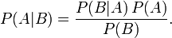

Bayesian Classifier
What are Bayesian Classifiers
Naive Bayesian Classifiers, often referred to just as a Bayesian Classifier, are the most nieve version of classifiers. It uses the Bayes' Theorem on conditional probability in order to classify. It essentially looks at the unclassified data and using probability of previously classified data, predicts how the unclassified data should be classified.
Bayes' Theorem is stated in an image taken from
Wikipedia where P(X) is the probability of X occuring, and P(A | B) is the probability of A occuring given B.

The most easy to understand example of a bayesian classifier is also given from
Wikipedia:
"In simple terms, a naive Bayes classifier assumes that the presence (or absence) of a particular feature of a class is unrelated to the presence (or absence) of any other feature. For example, a fruit may be considered to be an apple if it is red, round, and about 4" in diameter. Even if these features depend on each other or upon the existence of the other features, a naive Bayes classifier considers all of these properties to independently contribute to the probability that this fruit is an apple."
About the implementation
The following code is an example from the book Collective Intelligence. It is an implementation of a naive Bayesian classifier that is used to classify documents into different categories depending on their words.
# This will allow you to use the naive bayesian classified
class naivebayes(classifier):
# Initialize the object
def __init__(self,getfeatures):
classifier.__init__(self,getfeatures)
self.thresholds={}
# calculate the probability that the whole item will be in category
# (cat)
def docprob(self,item,cat):
features=self.getfeatures(item)
# Multiply the probabilities of all the features together
p=1
for f in features: p*=self.weightedprob(f,cat,self.fprob)
return p
# Calcultate the overall probability of finding a category (cat) in the
# item
def prob(self,item,cat):
catprob=self.catcount(cat)/self.totalcount()
docprob=self.docprob(item,cat)
return docprob*catprob
# Will set the threshold
def setthreshold(self,cat,t):
self.thresholds[cat]=t
# Will get the threshold
def getthreshold(self,cat):
if cat not in self.thresholds: return 1.0
return self.thresholds[cat]
# This will attempt to classify item. If it can't be classified within
# the threshold it will return default
def classify(self,item,default=None):
probs={}
# Find the category with the highest probability
max=0.0
for cat in self.categories():
probs[cat]=self.prob(item,cat)
if probs[cat]>max:
max=probs[cat]
best=cat
# Make sure the probability exceeds threshold*next best
for cat in probs:
if cat==best: continue
if probs[cat]*self.getthreshold(best)>probs[best]: return default
return best